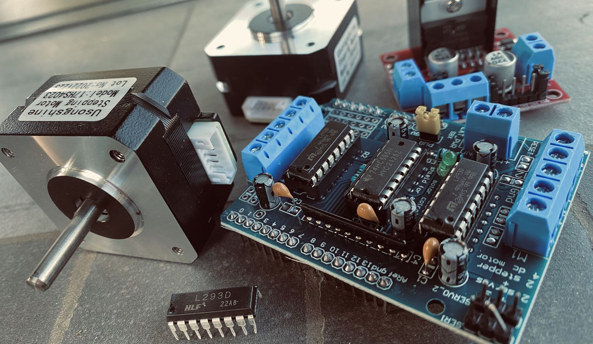

LangChain and Creating GPT ‘Personal Assistants’
Over the next serveral weeks I will be diving into my work in creating a personal assistant, much like a private chatGPT. The main reason will be so I can explore the different capabilities of LangChain and how I can use it to do exploratory data analysis on my library of PDF files, emails, and … Continue reading

Monday, May 29, 2023
Save time to Play!
All work and no play, right? Yet, I’ve found that setting time aside to play can be rewarding, especially when it comes to doing something that lets me learn and gain a deeper appreciation and understanding of my coding. Ever thought about how empowering it feels to be a creator? Even though I’ve been working … Continue reading